Adidas Product Finder. Find your perfect outdoor gear in under 60 seconds, built to be responsive, scalable, and easily editable.
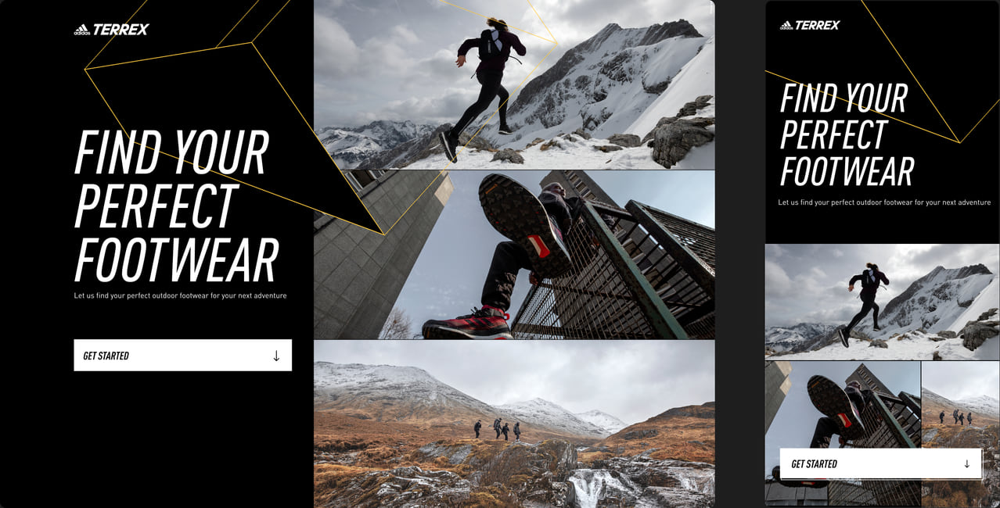
Big Picture
Adidas Outdoor approached Reaktor to design a product finder that matches customers to their perfect outdoor gear, it needed to be responsive, scalable, and easily editable. Oh, and delivered in 3 months. The initial scope was footwear, for Trail Running and Hiking.
Role
As Design Director I worked hands-on across UX and visual direction, leading a small agile team to deliver a working prototype and design spec, ready to be built by Adidas's app team. I also managed the client relationship, identifying project goals and aligning ways of working.
Approach
Working with Adidas’ retail team we set out to align our customer journey around the in-person conversation happening in stores. A core design challenge was to present the conversation in a visual way, designed mobile first, and to create a scaleable UI that was fun to use.
Outcome
The Product Finder was available via Adidas app across EU regions, accessible via the outdoor listing pages:
● 60 seconds to complete the journey
● 82% completion rate
● 25% bounce rate (lower than industry standard)
● 11.5% conversion rate (tapping the best match option)
Awards
AVA Digital Awards 2021 - Mobile Buying Experience
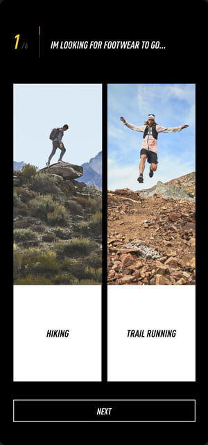
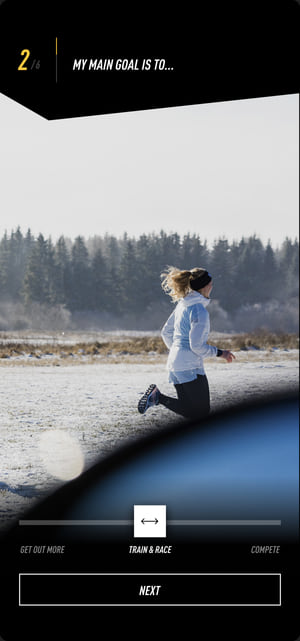
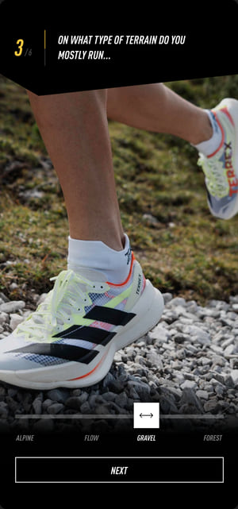
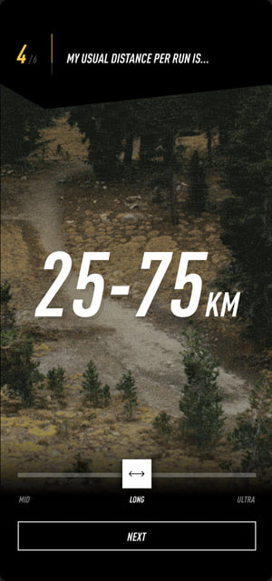
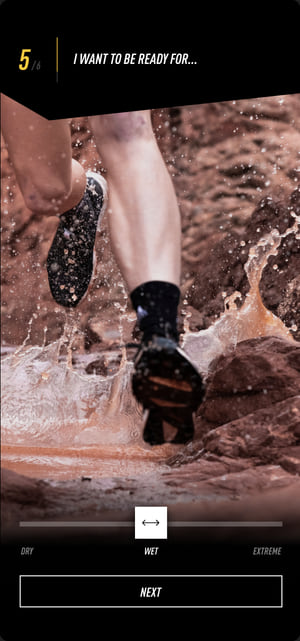
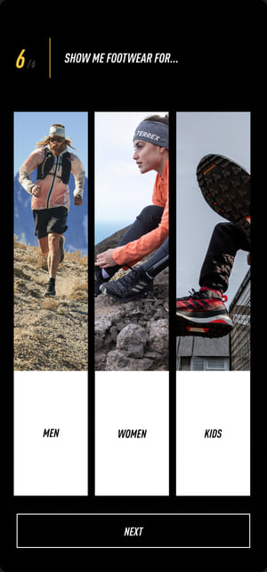
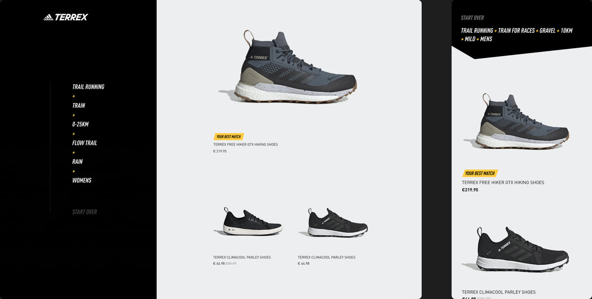
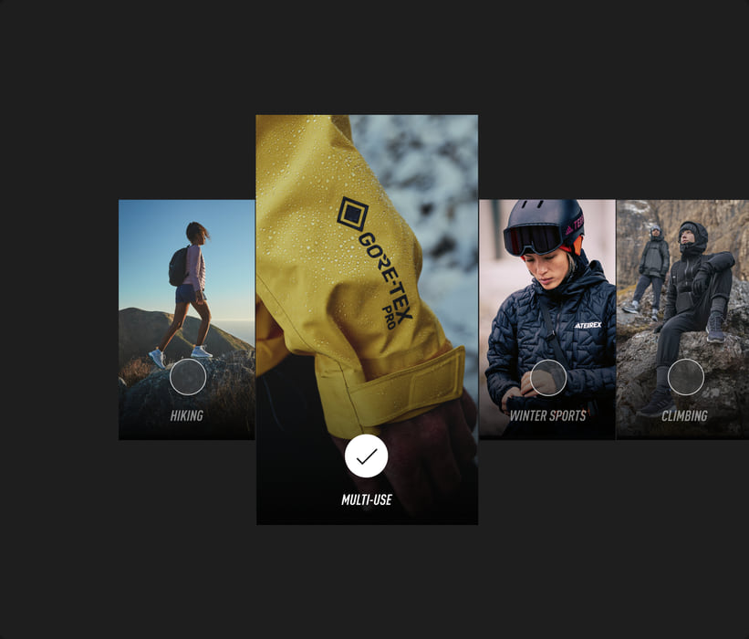
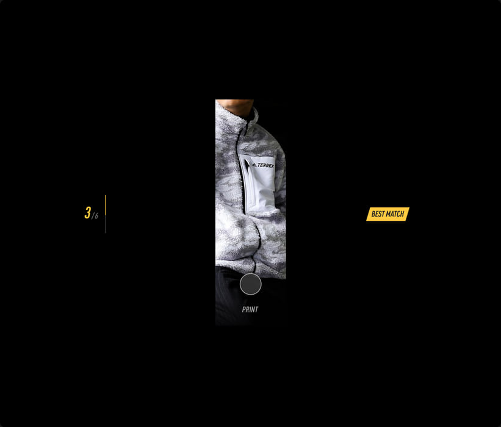
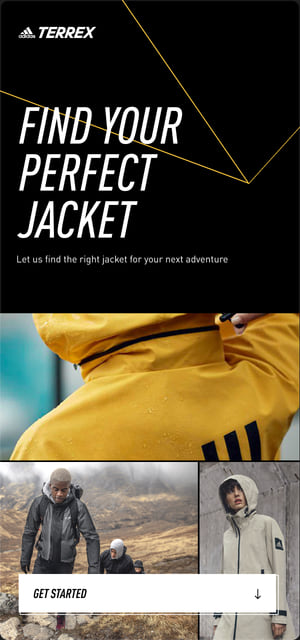
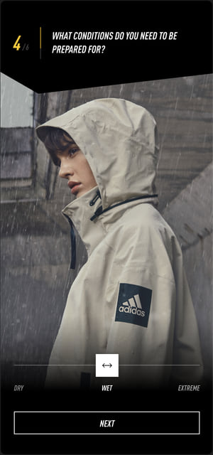
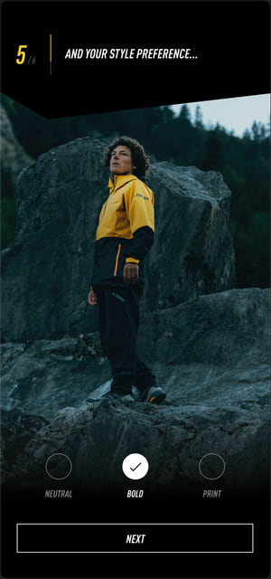
Outcome
“The Product Finder allows us to have a conversation with our shoppers and has led to fewer abandoned shopping carts, higher conversion rates and lower returns. So far, 82% of users have completed the full Product Finder journey within the adidas app.”Steffen Hack, Global Director Digital Commerce Outdoor at Adidas
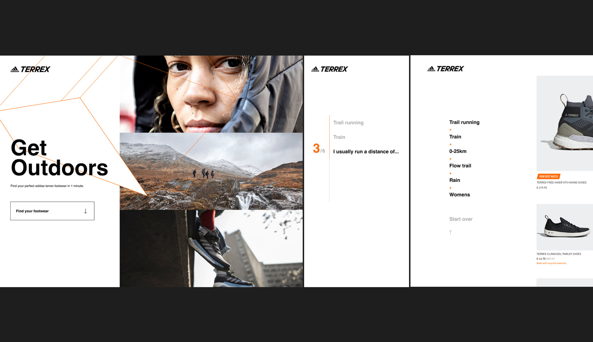
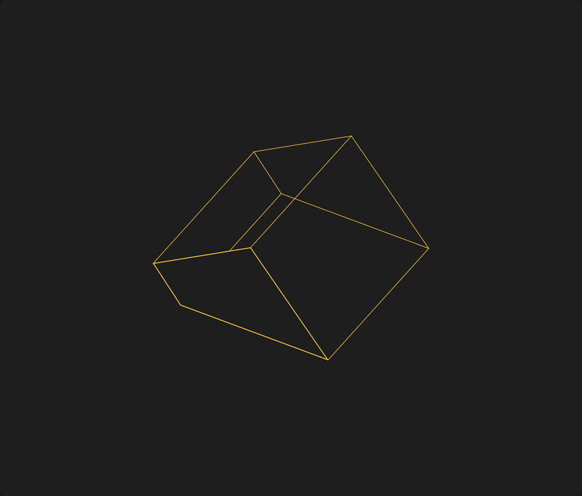
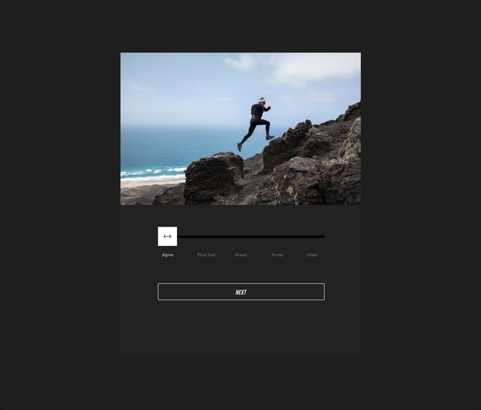